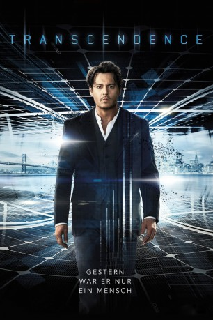

#231 Transcendence
 gesehen am 09.03.2015
gesehen am 09.03.2015
 
 IMDB-Wertung: 6.3 / 10
IMDB-Wertung: 6.3 / 10  Metascore: 42
Metascore: 42 
Dr. Will Caster gelang ein Quantensprung im Bereich der künstlichen Intelligenz. Er schaffte es, das kollektive menschliche Wissen sowie menschliche Emotionen auf den Computer zu übertragen. Doch dies ruft auch viele technikkritische Gegner auf den Plan. Als es einem von ihnen gelingt, Will schwer zu verwunden, sieht seine Ehefrau Evelyn nur einen Weg, um sein Leben zu retten: Sie muss den Verstand ihres Mannes in den Computer übertragen.
Jahr: 2014
Dauer: 119 Minuten
FSK: 12
Land: England Studio: TOBIS FilmTonspuren: DTS - ,
Untertitel: Deutsch,
Auflösung: 1080p (1920×800) Größe: 8468 MB
Genre: Drama, Mystery, Liebe, Sci-Fi, Thriller
Regisseur: Wally Pfister
Drehbuch: Jack Paglen
Soundtrack: Mychael Danna
Darsteller:
 Johnny Depp als Will Caster
Johnny Depp als Will Caster Rebecca Hall als Evelyn Caster
Rebecca Hall als Evelyn Caster Paul Bettany als Max Waters
Paul Bettany als Max Waters Cillian Murphy als Agent Buchanan
Cillian Murphy als Agent Buchanan Kate Mara als Bree
Kate Mara als Bree Cole Hauser als Colonel Stevens
Cole Hauser als Colonel Stevens Morgan Freeman als Joseph Tagger
Morgan Freeman als Joseph Tagger Clifton Collins Jr. als Martin
Clifton Collins Jr. als Martin Cory Hardrict als Joel Edmund
Cory Hardrict als Joel Edmund Falk Hentschel als Bob
Falk Hentschel als Bob Josh Stewart als Paul
Josh Stewart als Paul Luce Rains als Roger
Luce Rains als Roger Fernando Chien als Heng
Fernando Chien als Heng- Steven Liu als Chiu
 Xander Berkeley als Dr. Thomas Casey
Xander Berkeley als Dr. Thomas Casey Lukas Haas als James Thomas
Lukas Haas als James Thomas Wallace Langham als Dr. Strauss
Wallace Langham als Dr. Strauss- Sam Quinn als Meth Head #2
- Chris Gartin als Tech Conference Coordinator
- Olivia Taylor Dudley als Groupie
- Abe Martell als RIFT Hacker
- Lauren Sivan als Reporter
- Laramie Cooley als BDC Greeter
- Nancy Jeris als BDC Servant
 Dylan Kenin als FBI Agent
Dylan Kenin als FBI Agent- Antonio Del Prete als Will In Hybrid
 Jon Kristian Moore als Will In Hybrid
Jon Kristian Moore als Will In Hybrid John Trejo als Special Forces on Roof
John Trejo als Special Forces on Roof- Richard Daniel Williams als RIFT Surgeon
- Kristen Rakes als Computer Programmer
 Seth Adkins als Miserable Student
Seth Adkins als Miserable Student- Nathan Brimmer als Construction Worker , uncredited
- Jaime Channing als Shop Owner , uncredited
- Ethan Dennis als Sick Kid , uncredited
- Michael Fletcher als Spec Ops Soldier , uncredited
- Albert Fry Jr. als Bartender , uncredited
 Christopher W. Garcia als RIFT Child , uncredited
Christopher W. Garcia als RIFT Child , uncredited Lubella Gauna als Nurse , uncredited
Lubella Gauna als Nurse , uncredited- Nicholas Gibeault als Audience Member , uncredited
 Cliff Gravel als Preacher , uncredited
Cliff Gravel als Preacher , uncredited- Jeff Gurwood als Autograph Seeker , uncredited
- Stephen M. Hardin als MIT Programmer , uncredited
 Timothy Holmes als Hybrid , uncredited
Timothy Holmes als Hybrid , uncredited- Darrick Hurst als Berkeley Student , uncredited
 Dennis Keiffer als Hybrid Soldier , uncredited
Dennis Keiffer als Hybrid Soldier , uncredited- Steve Larese als Businessman , uncredited
 Elon Musk als Himself , uncredited
Elon Musk als Himself , uncredited Martin Palmer als Militant RIFT , uncredited
Martin Palmer als Militant RIFT , uncredited- Akshay Patel als James , uncredited
- Lyn Quinn als Tech Conference Attendee , uncredited
Datei: X:\2014(N-Z)\Transcendence (2014, FSK12, 1920x800).mkv seit 14.02.2015
Festplatte: HD 2013(I-Z)-2014(A-Z)
 Es gibt insgesamt 163 Filme in der Gruppe '2014(N-Z)'
Es gibt insgesamt 163 Filme in der Gruppe '2014(N-Z)'